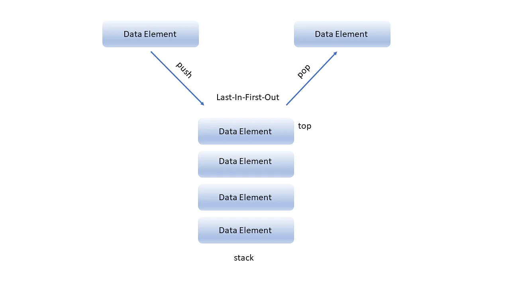
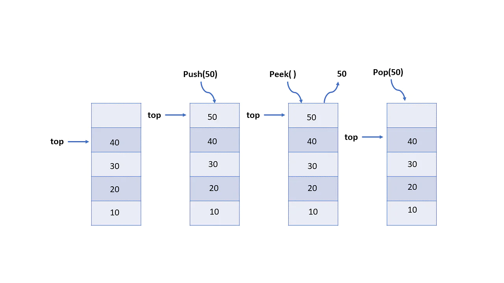
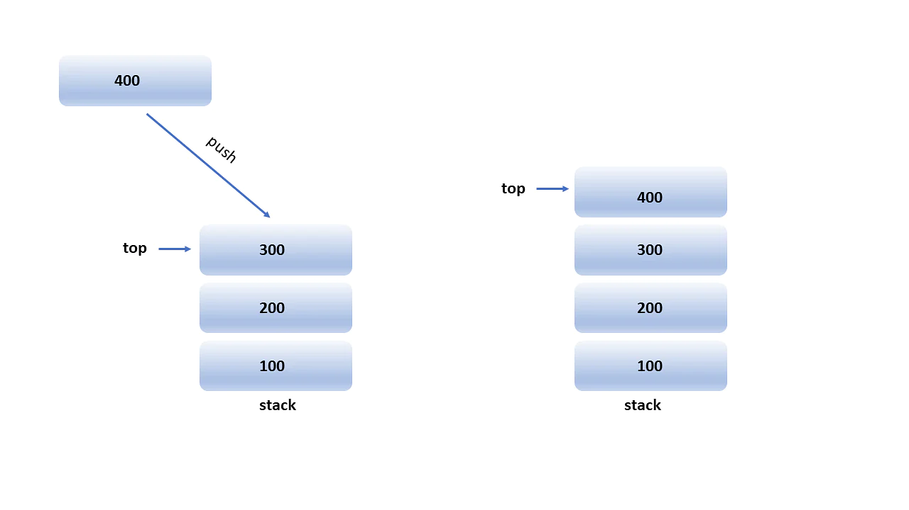
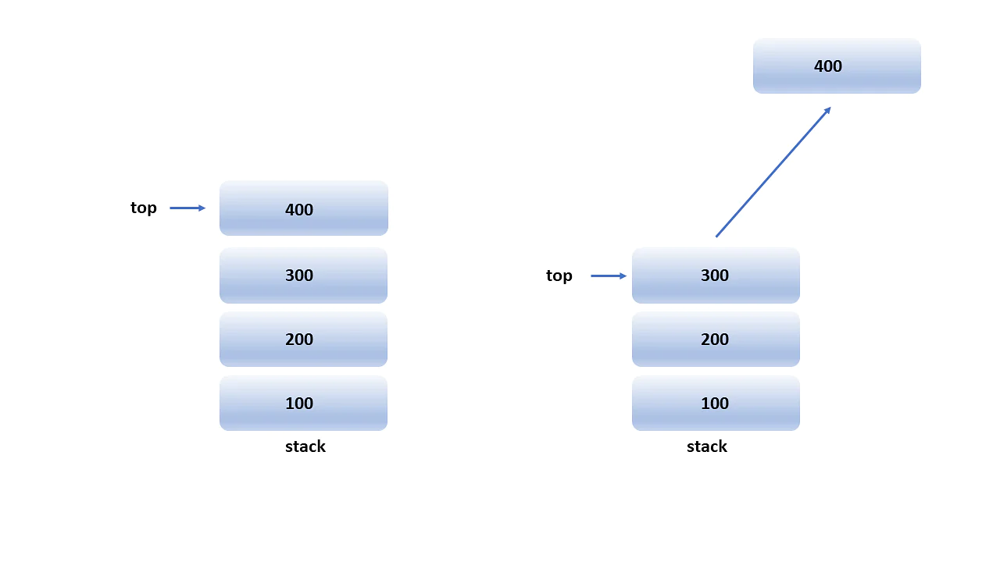
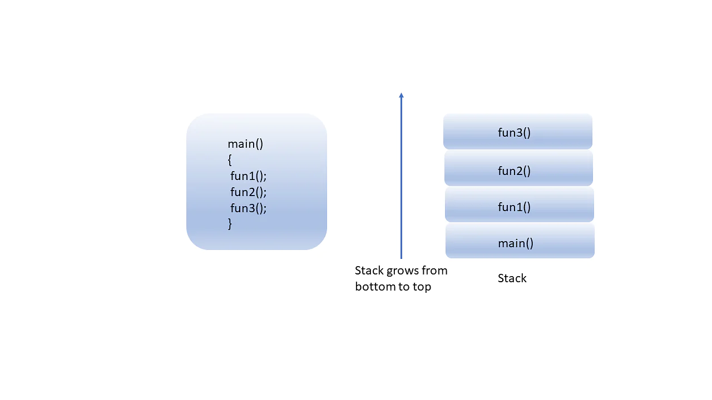

The stack data structure is a linear data structure that accompanies a principle known as LIFO (Last In First Out) or FILO (First In Last Out), insertion and deletion operations from one end of the stack data structure, that is top. Implementation of the stack can be done by contiguous memory which is an array, and non-contiguous memory which is a linked list. Stack plays a vital role in many applications. Real-life examples of a stack are a deck of cards, piles of books, piles of money, and many more
This example allows you to perform operations from one end only, like when you insert and remove new books from the top of the stack. It means insertion and deletion in the stack data structure can be done only from the top of the stack. You can access only the top of the stack at any given point in time.
Inserting a new element in the stack is termed a push operation.
Removing or deleting elements from the stack is termed pop operation.
Stack Representation in Data Structures:

WORKING OF STACK IN DATA STRUCTURE
Now take example stack of book.
You can only see the top, i.e., the top-most book, namely 40, which is kept top of the stack.
If you want to insert a new book first, namely 50, you must update the top and then insert a new text.
And if you want to access any other book other than the topmost book that is 40, you first remove the topmost book from the stack, and then the top will point to the next topmost book.

Basic Operations on Stack in Data Structures
There are two operation are perfomed by stack: Push Operation
Push operation involves inserting new elements in the stack. Since you have only one end to insert a unique element on top of the stack, it inserts the new element at the top of the stack.

Pop Operation
Pop operation refers to removing the element from the stack again since you have only one end to do all top of the stack. So removing an element from the top of the stack is termed pop operation.

ALGORITHM FOR OPERATION IN STACK
Push Operation
Push operation includes various steps, which are as follows :
Step 1: First, check whether or not the stack is full
Step 2: If the stack is complete, then exit
Step 3: If not, increment the top by one
Step 4: Insert a new element where the top is pointing
Step 5: Success
The algorithm of the push operation is:
Begin push: stack, item
If the stack is complete, return null
end if
top ->top+1;
stack[top] <-item
end
This is how you implement a push operation:
if(! isFull ())
{
top = top + 1;
stack[top] = item;
}
else {
printf(“stack is full”);
}
Pop Operation
Step 1: First, check whether or not the stack is empty
Step 2: If the stack is empty, then exit
Step 3: If not, access the topmost data element
Step 4: Decrement the top by one
Step 5: Success
The following is the algorithm of the pop operation:
Begin pop: stack
If the stack is empty
return null
end if
item -> stack[top] ;
Top -> top - 1;
Return item;
end
Implementing a pop operation is as follows:
int pop( int item){
If isEmpty()) {
item = stack[top];
top = top - 1;
return item;
}
else{
printf(“stack if empty”);
}
}
Application of Stack in Data Structures
Here are the top 7 applications of the stack in data structure:
Expression Evaluation and Conversion
Backtracking
Function Call
Parentheses Checking
String Reversal
Syntax Parsing
Memory Management
Expression Evaluation and Conversion
There are three types of expression that you use in programming, they are:
Infix Expression: An infix expression is a single letter or an operator preceded by one single infix string followed by another single infix string.
1.X
2.X + Y
3.(X + Y ) + (A - B)
Prefix Expression: A prefix expression is a single letter or an operator followed by two prefix strings.
1.X
2.+ X Y
3.+ + X Y - A B
Postfix Expression: A postfix expression (also called Reverse Polish Notation) is a single letter or an operator preceded by two postfix strings.
1.X
2.X Y +
3.X Y + C D - +
Similarly, the stack is used to evaluate these expressions and convert these expressions like infix to prefix or infix to postfix.
Backtracking
Backtracking is a recursive algorithm mechanism that is used to solve optimization problems.
To solve the optimization problem with backtracking, you have multiple solutions; it does not matter if it is correct. While finding all the possible solutions in backtracking, you store the previously calculated problems in the stack and use that solution to resolve the following issues.
The N-queen problem is an example of backtracking, a recursive algorithm where the stack is used to solve this problem.
Function Call
Whenever you call one function from another function in programming, the reference of calling function stores in the stack. When the function call is terminated, the program control moves back to the function call with the help of references stored in the stack.
So stack plays an important role when you call a function from another function.

Parentheses Checking
Stack in data structures is used to check if the parentheses like ( ), { } are valid or not in programing while matching opening and closing brackets are balanced or not.
So it stores all these parentheses in the stack and controls the flow of the program.
For e.g ((a + b) * (c + d)) is valid but {{a+b})) *(b+d}] is not valid.
String Reversal
Another exciting application of stack is string reversal. Each character of a string gets stored in the stack.
The string's first character is held at the bottom of the stack, and the last character of the string is held at the top of the stack, resulting in a reversed string after performing the pop operation.
Syntax Parsing
Since many programming languages are context-free languages, the stack is used for syntax parsing by many compilers.
Memory Management
Memory management is an essential feature of the operating system, so the stack is heavily used to manage memory.